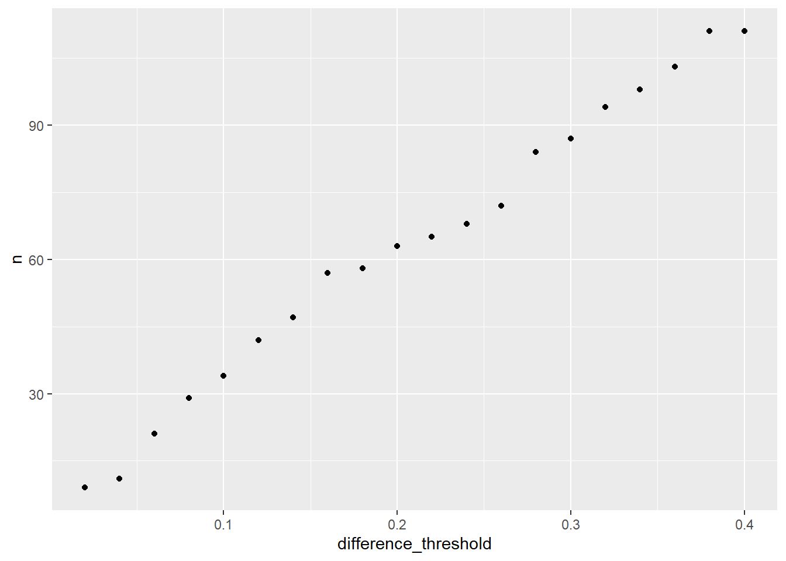
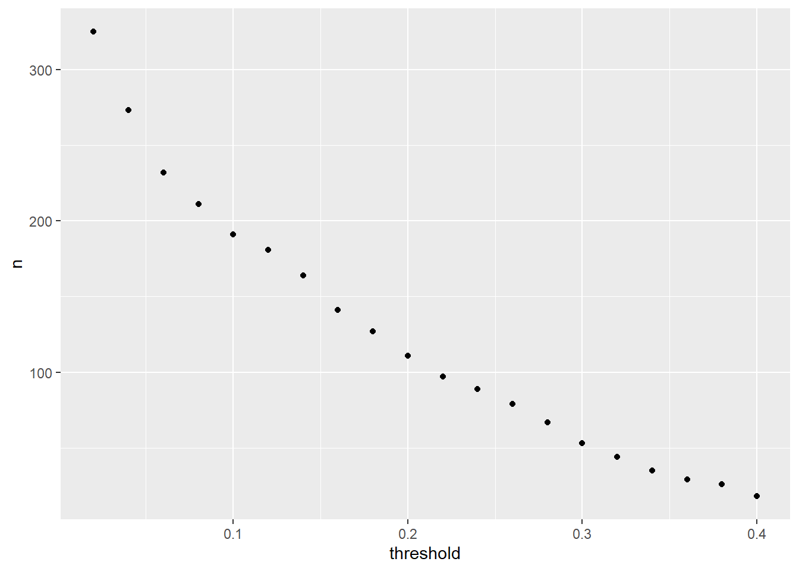
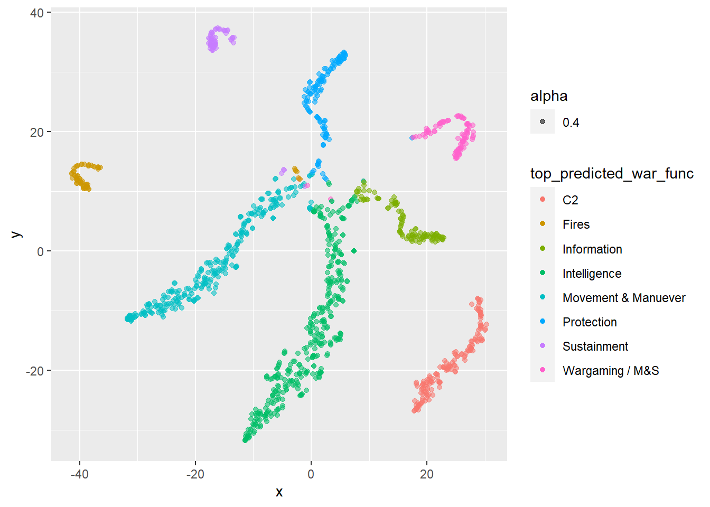
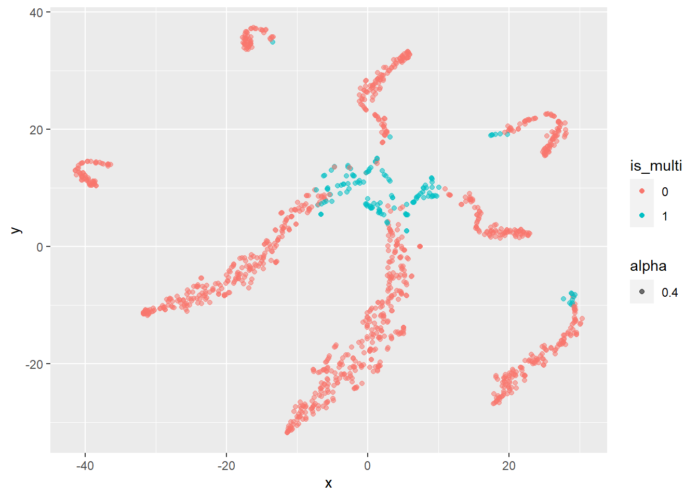

This project is part of the work I’m doing with DataRobot on classifying DoD RDT&E budget programs.
For this part of the project, I worked with Sarah Khatry to label 600 RDT&E programs based on their warfighting function. We then used DataRobot’s Auto ML to run multiclass classification models for the entire dataset we were looking at (the model used program and project text descriptions for the classification). The code below analyzes the resulting class probabilities from that model.
All of the code below is my attempt to replicate the work that Sarah had done in Python, but in R.
library(tidyverse)
library(janitor)
library(Rtsne)
warfighting <- read_csv("C:\\Users\\chad.peltier\\Downloads\\warfighting_function_predictions.csv") %>%
clean_names()
warfighting %>%
head(5)## # A tibble: 5 x 12
## original_index c2 fires information intelligence movement_manuev~
## <dbl> <dbl> <dbl> <dbl> <dbl> <dbl>
## 1 48 3.18e-2 5.77e-3 0.0467 0.00752 0.895
## 2 96 6.81e-2 4.71e-2 0.0234 0.347 0.0545
## 3 133 9.98e-1 1.62e-4 0.000158 0.000393 0.000611
## 4 137 9.98e-1 2.46e-4 0.000241 0.000760 0.0000739
## 5 172 1.11e-4 9.10e-5 0.000082 0.0000348 0.999
## # ... with 6 more variables: protection <dbl>, sustainment <dbl>,
## # wargaming_m_s <dbl>, top_predicted_war_func <chr>, func_list <chr>,
## # is_multi <dbl>The dataframe is pretty straightforward. It contains the probabilities for each class, the top predicted class, a list of classes above a 17% threshold, and a binary is_multi column for programs with multiple probabilities over 17%. The latter three columns were all created by Sarah.
The is_multi is a key part of our analysis. The client we are working with had originally labeled some training data with a “Multi” class for programs that fit into multiple categories. When Sarah and I re-labeled a new set of training data, we omitted the Multi class because of poor model performance on the original training data. Instead, we just labeled each program with a single category and trusted the model to determine the best option.
This part of our analysis is intended to identify which programs are actually multi. We thought about two general strategies:
Sarah did the first strategy previously; the code below is to test various difference thresholds for the second strategy. In the code below, warfighting_summary tests the second strategy (difference), while warfighting_summary2 essentially recreates the work that Sarah did, by overall probability threshold.
## By difference
warfighting_summary <- warfighting %>%
pivot_longer(cols = 2:9) %>%
group_by(original_index) %>%
arrange(desc(value)) %>%
summarize(dif_top2 = max(value) - nth(value,2)) %>%
arrange(dif_top2)
warfighting_summary %>%
head(5)## # A tibble: 5 x 2
## original_index dif_top2
## <dbl> <dbl>
## 1 21231 0.000780
## 2 19519 0.00503
## 3 9783 0.00937
## 4 14911 0.00966
## 5 30457 0.0109## By probability threshold
warfighting_summary2 <- warfighting %>%
select(1:9) %>%
pivot_longer(cols = 2:9) %>%
group_by(original_index) %>%
arrange(original_index, desc(value)) The next step was to test various thresholds for both strategies. For the warfighting_summary dataframe, the thresholds will be the difference between the top two categories. Purrr::map() allows us to iterate across multiple threshold values.
sequence <- seq(from = .02, to = 0.4, by = 0.02)
map(sequence, ~ summarise(warfighting_summary, n = sum(dif_top2 < .x)) %>% mutate(difference_threshold = .x)) %>%
bind_rows() %>%
ggplot(aes(difference_threshold, n)) +
geom_point()
map(sequence, ~ summarise(warfighting_summary2, n = sum(value > .x)) %>% filter(n > 1) %>% mutate(threshold = .x) %>% count(threshold)) %>%
bind_rows() %>%
ggplot(aes(threshold, n)) +
geom_point()
For warfighting_summary, the number of programs tagged as multi increases as we raise the threshold. For warfighting_summary2, the number of multi programs falls as we raise the threshold. In the training data we were originally given, around 20% of the data was tagged as multi, which is why we settled around a threshold value of .17 to get a similar percentage in the final data.
As you can see, going by difference threshold is more restrictive – it creates far fewer multis as the probability threshold route.
Next, we can also pull out the warfighting functions that have a difference of 17% or less and add them back into the original dataframe.
warfighting_dif <- warfighting %>%
select(1:9) %>%
pivot_longer(cols = 2:9) %>%
group_by(original_index) %>%
arrange(original_index, desc(value)) %>%
mutate(dif = max(value) - value) %>%
filter(dif <= .17) %>%
summarize(funcs_list_dif = paste(name, collapse = ", "))
warfighting_dif %>%
head(5)## # A tibble: 5 x 2
## original_index funcs_list_dif
## <dbl> <chr>
## 1 48 movement_manuever
## 2 96 wargaming_m_s, intelligence
## 3 133 c2
## 4 137 c2
## 5 172 movement_manuever## Re-combine with warfighting df
warfighting2 <- warfighting %>%
left_join(warfighting_dif) %>%
mutate(is_multi_dif = if_else(str_detect(funcs_list_dif, ","), 1,0))Finally, Sarah and Ted (also from DataRobot) tried another method for identifying multis by using tSNE to look for patterns in the data. The code below replicates their approach, but in R and comparing with the difference threshold method from above.
library(Rtsne)
wf_tsne <- warfighting2 %>%
select(2:9) %>%
Rtsne(check_duplicates = FALSE, dims = 2)
wf_tsne2 <- wf_tsne$Y %>%
as.data.frame() %>%
rename(x = V1, y = V2) %>%
bind_cols(warfighting2 %>% select(top_predicted_war_func, is_multi)) %>%
mutate(top_predicted_war_func = as.factor(top_predicted_war_func),
is_multi = as.factor(is_multi))
wf_tsne2 %>%
ggplot(aes(x = x, y = y, color = top_predicted_war_func)) +
geom_point(aes(alpha= 0.4)) 
wf_tsne2 %>%
ggplot(aes(x = x, y = y, color = is_multi)) +
geom_point(aes(alpha= 0.4)) 
The two charts above are really interesting. As the first shows, the intersection of the warfighting function groups near the cernter of the chart shows which programs might have been challenging for the original model to classify. For example, some intellignce programs are nearly overlapping with protection (likely cyber protection programs), C2, and Movement and Manuever (probably unmanned systems with program descriptions that mention sensor development).
The next chart shows the same points instead colored by whether the were identified as multi or not by our criteria above. The tSNE plot reinforces the validity of the multi category because the points at the center of the chart – where the points overlap – are where the vast majority of the multis are. Further, for the categories that are far from the center, like wargaming/M&S, the points closest to the center there are also colored as multi.